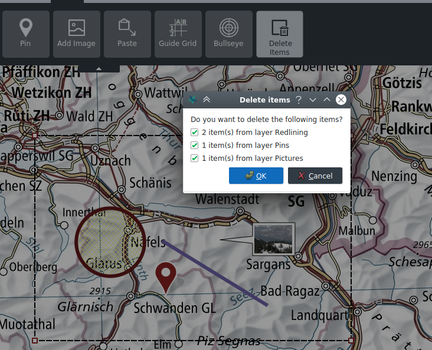

Disegno
Gli strumenti di disegno si trovano nella scheda Disegno. È possibile inserire nella mappa diverse figure geometriche, testi e spilli, nonché immagini.
Come per gli strumenti di analisi, anche con lo strumento di disegno è possibile effettuare l'inserimento numerico dei punti delle coordinate se è attivo il pulsante Mostra i campi di immissione numerica in modalità disegno nella scheda Impostazioni.
Sempre nella scheda Impostazioni, è possibile attivare lo snapping durante la modalità di disegno. Lo snapping viene effettuato a tutti i vertici delle geometrie nella mappa.
Figure geometriche e testi
Le figure geometriche disponibili per il disegno sono punti, linee, poligoni, rettangoli e cerchi. A seconda del tipo di figura geometrica, è possibile definire colore e stile per bordo e riempimento, nonché la larghezza delle linee e la dimensione dei punti.
Per quanto riguarda i testi, è possibile adeguare i font e le dimensioni, nonché il colore di riempimento.
Le figure geometriche e i testi così delineati vengono raggruppati nel layer Redlining nell'elenco delle carte.
Le figure geometriche o i testi già disegnati possono essere modificati selezionandoli sulla mappa. Gli oggetti selezionati possono essere spostati e, a seconda del tipo di figura geometrica, è possibile spostare i singoli punti di controllo, nonché crearne o rimuoverne tramite menu contestuale.
È possibile continuare il disegno di linee e poligoni esistenti dal menu contestuale dei vertici della geometria.
Durante il disegno è possibile annullare o ripristinare cambiamenti effettuati tramite CTRL+Z e CTRL+Y, oppure tramite i pulsanti appositi situati nella parte inferiore della mappa.
Quando si creano o modificano delle figure geometriche, vengono anche visualizzati i relativi valori di misura.

Figure geometriche e testi possono venir copiati, tagliati e incollati tramite gli usuali tasti di scelta rapida CTRL+C, CTRL+X e CTRL+V oppure dal menu contestuale.
È possibile selezionare più figure e testi contemporaneamente con il tasto CTRL, e in seguito spostare, copiare, tagliare e incollare l'intero gruppo.
Immagini
Immagini e foto nei comuni formati (JPG, PNG, BMP) possono venir aggiunte alla mappa come annotazioni. Queste vengono visualizzate all'interno di un fumetto. Se l'immagine è georeferenziata (tramite dei tag EXIF), il fumetto viene posizionato nella posizione corrispondente nella mappa e la posizione è bloccata. Il blocco della posizione può essere attivato e disattivato dal menu contestuale. Facendo doppio clic sul fumetto, l'immagine viene aperta con il programma di visualizzazione predefinito del sistema. La dimensione del fumetto può essere aggiustata a piacimento dagli angoli.
Le immagini sono raggruppate nel layer Immagini.
Grafiche vettoriali
Pure con la funzionalità Aggiungi immagine è possibile aggiungere grafiche SVG alla mappa. Queste possono essere scalate rispettivamente ruotate trascinando i rispettivi punti di controllo.
Grafiche vettoriali sono raggruppate nel layer Immagini SVG.

Simboli SymTaZ
SymZaZ è un'applicazione esterna con la quale è possibile create symboli, segni tattici e segni convenzionali civili secondo il regolamento 52.002.03 del esercito svizzero. Questi simboli possono essere importati in KADAS, tramite la funzionalità Copia negli appunti di SymTaZ seguito da Incolla in KADAS, oppure salvando il simbolo come SVG da SymTaZ e apprendo questo in KADAS attraverso Aggiungi immagine.
Cancellazione di oggetti
I singoli oggetti possono essere cancellati tramite menu contestuale o con il tasto DEL. Lo strumento Cancellazione di oggetti consente di eliminare più oggetti di un estratto selezionato. Questa funzione può essere richiamata anche con CTRL+Rettangolo nella modalità di spostamento.
